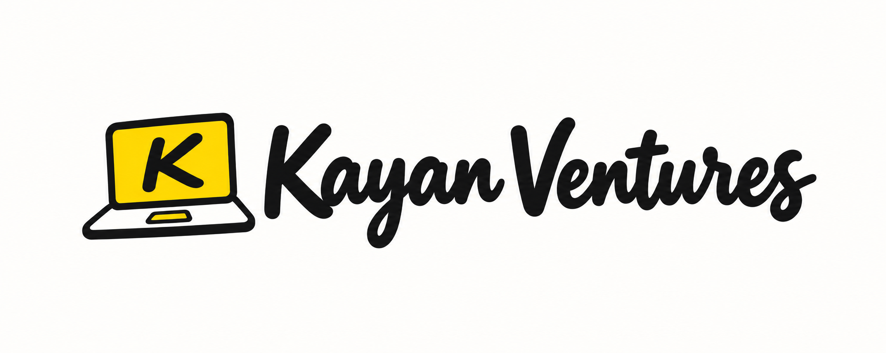

A clear order workflow
Organize customer details and order statuses so your team can see what’s new, in progress, and ready to dispatch.

Let’s talkORDER & INVENTORY MANAGEMENT · 05
Your orders and inventory belong in the same conversation. We build a connected system that helps your team process purchases and understand what’s in stock.
MADE FOR YOUR KIND OF BUSINESS
For ecommerce businesses and retail teams managing orders and physical products.
↗WHAT WE CAN HELP WITH
Receiving an order is only the start. We map the work that follows—confirmation, packing, dispatch, stock changes, and returns—then build the parts your team needs into one practical system.
Organize customer details and order statuses so your team can see what’s new, in progress, and ready to dispatch.
Manage product records, variants, stock availability, and the movements that change your inventory.
Plan how cancellations, returns, and stock corrections should be recorded in your business.
Agree the views, permissions, and summaries that help your team spot the work that needs attention.
A CLEAR STARTING POINT
We’ll agree on the exact scope together. Here’s what we can plan around your business.
Talk through your requirementsHOW WE WORK
Clear priorities. Shared decisions.
A process you’re part of.
We look at how orders arrive, where stock is tracked, and how your team packs, dispatches, and handles returns.
We build the agreed order and inventory functions, with clear rules for statuses and stock changes.
We test representative orders, cancellations, and stock adjustments together before handover.
A FEW THINGS TO KNOW
Want to talk about your specific setup?
Let’s work through it together.
Yes. We treat them as one connected service so orders and stock can be planned together, with a scope that fits your operations.
We’ll review your store and its integration options first. We can then agree what data can be connected and how updates should flow.
We can include these in the planned scope. Share your process so we can define the rules and complexity before building.